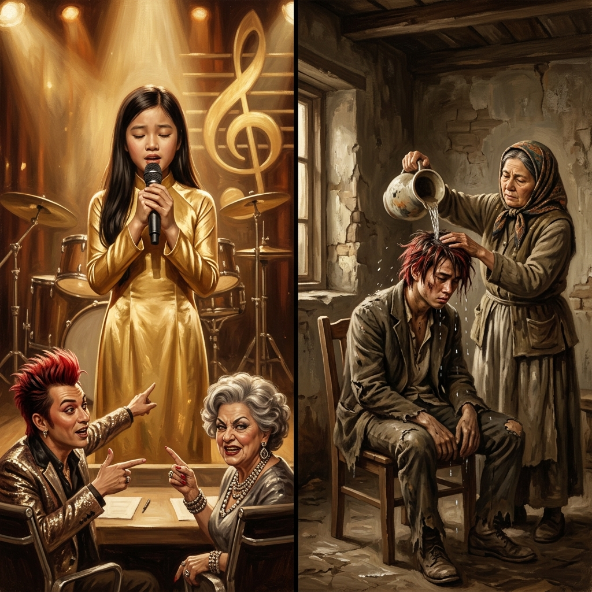
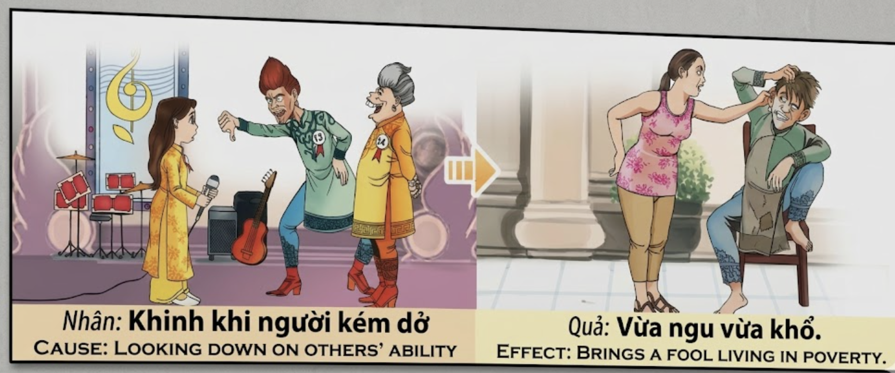

El Juez que fue JuzgadoThe Judge Who Was JudgedIl Giudice Giudicato被审判的审判者القاضي الذي حُكم عليهСудья, которого судилиDer Richter, der gerichtet wurdeLe Juge qui fut Jugé裁かれた審判者O Juiz que foi JulgadoVị Giám Khảo Bị Phán Xét
Quien señala con el dedo el talento ajeno para burlarse de él no está juzgando al otro: está firmando su propia sentencia. El karma convierte al que desprecia en despreciado, al que ridiculiza en ridículo, al que se cree sabio por humillar en el más necio de los necios. He who points his finger at another's talent to mock it is not judging the other: he is signing his own sentence. Karma turns the scorner into the scorned, the mocker into the mocked, and he who thinks himself wise for humiliating into the greatest fool of all. Chi punta il dito sul talento altrui per deriderlo non sta giudicando l'altro: sta firmando la propria sentenza. Il karma trasforma chi disprezza in disprezzato, chi ridicolizza in ridicolo, chi si crede saggio nell'umiliare nel più stolto degli stolti. 用手指嘲笑他人才华的人，审判的不是别人——而是在签署自己的判决书。业力会让蔑视者成为被蔑视者，嘲笑者成为被嘲笑者，自以为通过羞辱他人而聪明的人成为最愚蠢的愚人。 من يشير بإصبعه إلى موهبة غيره ساخراً لا يحكم على الآخر بل يوقّع حكمه هو. يحوّل الكارما المستهزئ إلى مُستهزَأ به، والساخر إلى مسخرة، ومن يظنّ نفسه حكيماً في إذلال الآخرين إلى أحمق الحمقى. Кто указывает пальцем на чужой талант, чтобы высмеять его, судит не другого — он подписывает собственный приговор. Карма превращает насмешника в осмеянного, презирающего — в презираемого, а того, кто считает себя мудрым, унижая, — в глупейшего из глупцов. Wer mit dem Finger auf das Talent eines anderen zeigt, um es zu verspotten, urteilt nicht über den anderen — er unterzeichnet sein eigenes Urteil. Karma verwandelt den Spötter in den Verspotteten, den Verächter in den Verachteten und den, der sich weise wähnt, indem er erniedrigt, in den größten aller Narren. Celui qui pointe du doigt le talent d'autrui pour s'en moquer ne juge pas l'autre : il signe sa propre sentence. Le karma transforme le moqueur en moqué, le méprisant en méprisé, et celui qui se croit sage en humiliant en le plus sot des sots. 他人の才能を指差して嘲笑う者は、相手を裁いているのではありません——自らの判決に署名しているのです。カルマは嘲る者を嘲られる者に、蔑む者を蔑まれる者に、人を辱めることで賢いと思い込む者をこの上ない愚か者に変えます。 Quem aponta o dedo ao talento alheio para o ridicularizar não está a julgar o outro: está a assinar a sua própria sentença. O karma transforma quem despreza em desprezado, quem ridiculariza em ridículo, quem se julga sábio por humilhar no mais néscio dos néscios. Kẻ chỉ tay vào tài năng người khác để chế giễu không phải đang xét xử người ta — mà đang ký bản án cho chính mình. Nhân quả biến kẻ khinh khi thành kẻ bị khinh khi, kẻ chê cười thành trò cười, kẻ tự cho mình thông thái khi sỉ nhục người khác thành kẻ ngu dốt nhất trong mọi kẻ ngu dốt.
El desprecio por las habilidades de otro ser humano es, entre todos los pecados kármicos, uno de los más insidiosos, porque no deja herida visible pero destruye algo infinitamente más profundo que la carne: la confianza de un alma en su propio valor. Cuando alguien señala con el dedo a un cantante, a un artista, a un aprendiz, a cualquier ser que ha tenido el coraje inmenso de mostrar al mundo lo que sabe —por imperfecto que sea— y lo ridiculiza, no está simplemente emitiendo una opinión: está pisando una semilla antes de que tenga la oportunidad de germinar. Y el karma, que es el jardinero más paciente del universo, toma nota de cada semilla aplastada.
La retribución kármica del desprecio sigue una lógica tan elegante como cruel: quien menospreció la habilidad ajena pierde la suya propia. No de golpe, sino gradualmente, como un grifo que gotea en sentido inverso. El que se creía brillante por burlarse del que empezaba descubre un día que su propia mente se embota, que las ideas que antes le llegaban fácilmente ahora huyen de él como palomas asustadas, que el mundo lo mira con la misma condescendencia con la que él miró a aquella cantante humilde en su vestido dorado. Y así, quien se sentó en la silla del juez termina sentado en la silla del juzgado: confuso, empobrecido, incapaz de comprender por qué la vida le arroja agua fría sobre la cabeza mientras los demás señalan y ríen. Porque el dedo que apuntó al otro gira siempre hacia uno mismo. Siempre.
Contempt for the abilities of another human being is, among all karmic sins, one of the most insidious, because it leaves no visible wound but destroys something infinitely deeper than flesh: the confidence of a soul in its own worth. When someone points their finger at a singer, an artist, an apprentice—any being who has had the immense courage to show the world what they know, however imperfect—and ridicules them, they are not simply voicing an opinion: they are stepping on a seed before it has the chance to sprout. And karma, the most patient gardener in the universe, takes note of every crushed seed.
The karmic retribution for contempt follows a logic as elegant as it is cruel: he who scorned another's ability loses his own. Not suddenly, but gradually, like a faucet dripping in reverse. He who thought himself brilliant for mocking a beginner discovers one day that his own mind grows dull, that ideas that once came easily now flee like frightened doves, and that the world regards him with the same condescension with which he looked upon that humble singer in her golden dress. And so, he who sat in the judge's chair ends up in the defendant's—confused, impoverished, unable to understand why life pours cold water over his head while others point and laugh. Because the finger that pointed at another always turns back upon oneself. Always.
Il disprezzo per le capacità di un altro essere umano è, fra tutti i peccati karmici, uno dei più insidiosi, perché non lascia ferite visibili ma distrugge qualcosa di infinitamente più profondo: la fiducia di un'anima nel proprio valore. Quando qualcuno punta il dito contro un cantante, un artista, un apprendista — qualsiasi essere che ha avuto il coraggio di mostrare al mondo ciò che sa — e lo ridicolizza, sta calpestando un seme prima che abbia la possibilità di germogliare.
La retribuzione karmica del disprezzo segue una logica elegante e crudele: chi disprezzò l'abilità altrui perde la propria. Chi si credeva brillante nel deridere gli altri scopre che la propria mente si offusca, le idee fuggono come colombe spaventate, e il mondo lo guarda con la stessa condiscendenza con cui lui guardava quella cantante umile. Chi sedette sulla sedia del giudice finisce sulla sedia dell'imputato: confuso, impoverito, incapace di capire perché la vita gli versa acqua fredda in testa mentre gli altri ridono.
蔑视他人的能力是所有业力之罪中最阴险的一种，因为它不留下可见的伤口，却摧毁了比肉体更深层的东西：一个灵魂对自身价值的信心。当有人指着一个歌手、一个艺术家、一个学徒——任何有勇气向世界展示所学之人，无论多么不完美——并嘲笑他们时，他们不仅仅是在发表意见：他们是在踩踏一颗还没来得及发芽的种子。
蔑视的业力报应遵循优雅而残酷的逻辑：蔑视他人能力的人失去自己的能力。自以为嘲笑初学者就很聪明的人，有一天会发现自己的头脑变得迟钝，曾经轻易而来的想法像受惊的鸽子一样逃走，世界用同样的居高临下看着他。坐在审判席上的人最终坐在了被告席上：困惑、贫困，不明白为什么生活往他头上浇冷水，而别人指指点点地笑。因为指向别人的手指，永远会转向自己。永远。
احتقار قدرات إنسان آخر هو من أخبث الذنوب الكارمية لأنه لا يترك جرحاً مرئياً لكنه يدمر شيئاً أعمق بلا حدود من اللحم: ثقة روح بقيمتها. من يشير بإصبعه إلى مغنية أو فنان أو متعلم ويسخر منه لا يعبّر عن رأي بل يدوس بذرة قبل أن تنبت.
الجزاء الكارمي للاحتقار يتبع منطقاً أنيقاً وقاسياً: من ازدرى موهبة غيره يفقد موهبته. من ظنّ نفسه لامعاً بسخريته من المبتدئين سيكتشف أن عقله يكلّ والأفكار تفرّ والعالم ينظر إليه بنفس التعالي. من جلس على كرسي القاضي ينتهي على كرسي المتّهم: حائراً فقيراً، والحياة تسكب ماءً بارداً على رأسه والآخرون يشيرون ويضحكون. لأن الإصبع الذي يشير إلى الغير يدور دائماً نحو صاحبه.
Презрение к способностям другого человека — один из самых коварных кармических грехов, ибо оно не оставляет видимых ран, но разрушает нечто бесконечно более глубокое: веру души в собственную ценность. Когда кто-то указывает пальцем на певца, художника, ученика — любое существо, имевшее огромную смелость показать миру то, что умеет, — и высмеивает его, он топчет семя, прежде чем оно успеет прорасти.
Кармическое воздаяние за презрение следует изящной и жестокой логике: кто презирал чужие способности, теряет свои. Кто считал себя блестящим, высмеивая начинающих, обнаруживает, что его разум тупеет, идеи бегут, как испуганные голуби, и мир смотрит на него с тем же снисхождением. Кто сидел в кресле судьи — оказывается на скамье подсудимых: растерянный, обнищавший, не понимающий, почему жизнь льёт ему на голову холодную воду, а остальные показывают пальцем и смеются.
Die Verachtung der Fähigkeiten eines anderen Menschen ist unter allen karmischen Sünden eine der heimtückischsten, denn sie hinterlässt keine sichtbare Wunde, zerstört aber etwas unendlich Tieferes: das Vertrauen einer Seele in ihren eigenen Wert. Wer mit dem Finger auf einen Sänger, Künstler oder Lehrling zeigt und ihn lächerlich macht, tritt auf einen Samen, bevor er keimen kann.
Die karmische Vergeltung für Verachtung folgt einer ebenso eleganten wie grausamen Logik: Wer die Fähigkeiten anderer verachtete, verliert seine eigenen. Wer sich für brillant hielt, weil er Anfänger verspottete, entdeckt eines Tages, dass sein Geist stumpf wird. Wer auf dem Richterstuhl saß, landet auf der Anklagebank: verwirrt, verarmt, unfähig zu verstehen, warum das Leben ihm kaltes Wasser über den Kopf gießt, während andere zeigen und lachen.
Le mépris des capacités d'un autre être humain est, parmi tous les péchés karmiques, l'un des plus insidieux, car il ne laisse aucune blessure visible mais détruit quelque chose d'infiniment plus profond : la confiance d'une âme en sa propre valeur. Quiconque pointe du doigt un chanteur, un artiste, un apprenti — et le ridiculise — piétine une graine avant qu'elle n'ait la chance de germer.
La rétribution karmique du mépris suit une logique aussi élégante que cruelle : qui méprisa les capacités d'autrui perd les siennes. Qui se croyait brillant en se moquant des débutants découvre que son esprit s'émousse, que les idées fuient comme des colombes effarouchées. Qui s'assit sur la chaise du juge finit sur celle de l'accusé : confus, appauvri, incapable de comprendre pourquoi la vie lui verse de l'eau froide sur la tête tandis que les autres montrent du doigt et rient.
他人の能力への軽蔑は、すべてのカルマの罪の中で最も陰険なものの一つです。目に見える傷は残しませんが、肉体よりもはるかに深いものを破壊するからです——自分自身の価値に対する魂の信頼です。歌手や芸術家や修行者を指差して嘲笑する者は、意見を述べているのではありません。芽吹く前の種を踏みつぶしているのです。
軽蔑に対するカルマの報いは、優雅にして残酷な論理に従います。他人の能力を蔑んだ者は、自らの能力を失います。初心者を馬鹿にして自分は賢いと思っていた者は、やがて自分の頭が鈍くなり、かつて容易に湧いた発想が怯えた鳩のように逃げ去ることに気づきます。審判者の椅子に座っていた者は、被告人の椅子に座ることになります。困惑し、貧しくなり、なぜ人生が自分の頭に冷水を浴びせ、他の人々が指差して笑うのか理解できないまま。
O desprezo pelas capacidades de outro ser humano é, entre todos os pecados kármicos, um dos mais insidiosos, pois não deixa ferida visível mas destrói algo infinitamente mais profundo: a confiança de uma alma no seu próprio valor. Quem aponta o dedo a um cantor, a um artista, a um aprendiz — e o ridiculariza — está a pisar uma semente antes de ela ter oportunidade de germinar.
A retribuição kármica do desprezo segue uma lógica tão elegante quanto cruel: quem menosprezou a habilidade alheia perde a sua. Quem se sentou na cadeira do juiz acaba na do réu: confuso, empobrecido, incapaz de compreender por que a vida lhe atira água fria à cabeça enquanto os outros apontam e riem. Porque o dedo que apontou ao outro volta-se sempre para nós próprios. Sempre.
Sự khinh khi tài năng của người khác là một trong những tội nhân quả thâm hiểm nhất, bởi nó không để lại vết thương nhìn thấy mà phá hủy thứ sâu thẳm hơn xương thịt gấp vạn lần: niềm tin của một linh hồn vào giá trị của chính mình. Khi ai đó chỉ tay vào một ca sĩ, một nghệ nhân, một người học việc — bất kỳ sinh linh nào đã có can đảm phi thường để phô bày cho đời điều mình biết — rồi chế nhạo họ, người đó không chỉ đang phát biểu ý kiến: người đó đang giẫm lên một hạt giống trước khi nó có cơ hội nảy mầm.
Quả báo nhân quả cho sự khinh khi tuân theo logic vừa tinh tế vừa tàn nhẫn: ai khinh khi tài năng kẻ khác sẽ mất tài của chính mình. Ai tự cho mình sáng suốt khi chê bai người mới bắt đầu sẽ nhận ra đầu óc mình cùn dần, ý tưởng bay mất như bồ câu hoảng sợ, và thế gian nhìn mình bằng chính sự trịch thượng đó. Ai ngồi ghế giám khảo rốt cuộc ngồi ghế bị cáo: hoang mang, nghèo khổ, không hiểu vì sao đời tạt nước lạnh lên đầu mình trong khi người ta chỉ chỏ cười. Bởi ngón tay chỉ vào người khác luôn luôn quay ngược lại chính mình. Luôn luôn.
La Nota que Nadie Quiso Escuchar
The Note No One Wanted to Hear
La Nota che Nessuno Volle Ascoltare
无人愿听的音符
النغمة التي لم يُرِد أحد سماعها
Нота, которую никто не хотел слышать
Die Note, die niemand hören wollte
La Note que Personne ne voulait Entendre
誰も聴こうとしなかった音
A Nota que Ninguém Quis Ouvir
Nốt Nhạc Không Ai Muốn Nghe
En una ciudad que se creía capital de las artes, se celebraba cada año un concurso de canto donde los jueces eran más famosos que los cantantes. Dos de ellos reinaban sobre el escenario como dioses menores: Quang, un hombre de pelo rojo encendido y botas de cuero escarlata con el número 13 bordado en la chaqueta, que jamás había cantado una sola nota pero se creía dueño de todas; y Madame Hoa, una mujer de cabellos grises como ceniza y joyas que tintineaban con cada carcajada, que había olvidado cómo era estar sola ante un micrófono pero no cómo destruir a quien lo estaba.
Aquella noche subió al escenario una muchacha de apenas dieciséis años llamada Linh. Vestía un áo dài dorado que su madre había cosido a mano, y llevaba un micrófono tan viejo que temblaba como un pajarillo asustado entre sus dedos. Linh cantó. No cantó perfecto — su voz era joven y en una nota alta se quebró como una rama verde —, pero cantó con algo que ni Quang ni Madame Hoa habían poseído jamás: cantó con el alma desnuda. Quang bajó el pulgar con desprecio teatral y gritó: "¡Vuelve a tu pueblo, niña de campo!" Madame Hoa rio tan fuerte que sus joyas temblaron: "¡Más vale que aprendas a coser como tu madre, porque cantar no es lo tuyo!" El público, que no sabía pensar por sí mismo, rio con ellos.
Linh bajó del escenario sin llorar. Se fue caminando bajo la lluvia, con el áo dài dorado pegado a la espalda, y en silencio le dijo a la noche: "Seguiré cantando, aunque nadie quiera escucharme, porque mi canción no le pertenece al juez — le pertenece al viento." Y así lo hizo. Practicó diez años. A los veintiséis, su voz era un río de cristal que hacía llorar a los ciegos y bailar a los paralíticos. Llenó teatros, cruzó oceanos, cantó ante reyes. Pero nunca, jamás, señaló con el dedo a un principiante. "Cada voz que empieza", decía, "es un amanecer que aún no ha terminado de salir."
¿Y qué fue de Quang y Madame Hoa? Quang, que vivía de la crueldad de su lengua, descubrió que un día su lengua ya no servía para nada: perdió la voz y con ella su trabajo, su fama, sus amigos. Terminó sentado en una silla de plástico en una esquina, mientras la vida — con la precisión irónica del karma — le tiraba agua fría sobre la cabeza cada vez que llovía, porque ya no tenía techo. Madame Hoa, que se reía de la torpeza ajena, descubrió en sí misma la torpeza más profunda: la incapacidad de amar. Murió sola, rodeada de joyas que no podían abrazarla. Y el eco de la risa cruel con la que humillaron a Linh aquella noche seguía sonando — pero ahora solo dentro de sus propios cráneos vacíos, como una nota que nadie quiso escuchar cuando la cantó un alma pura, y que ahora ya nadie podía silenciar.
In a city that thought itself the capital of the arts, a singing contest was held each year where the judges were more famous than the singers. Two of them reigned over the stage like minor gods: Quang, a man with fiery red hair and scarlet leather boots with the number 13 embroidered on his jacket, who had never sung a single note but believed he owned them all; and Madame Hoa, a woman with ash-grey hair and jewelry that jingled with every laugh, who had forgotten what it was like to stand alone before a microphone but not how to destroy those who did.
That night a girl of barely sixteen named Linh walked onto the stage. She wore a golden áo dài her mother had sewn by hand and carried a microphone so old it trembled like a frightened bird between her fingers. Linh sang. She did not sing perfectly—her voice was young and on a high note it broke like a green branch—but she sang with something neither Quang nor Madame Hoa had ever possessed: she sang with her soul laid bare. Quang pointed his thumb down with theatrical contempt and shouted: "Go back to your village, country girl!" Madame Hoa laughed so hard her jewels shook: "Better learn to sew like your mother, because singing isn't for you!" The audience, which did not know how to think for itself, laughed with them.
Linh left the stage without crying. She walked away in the rain, the golden áo dài clinging to her back, and in silence she told the night: "I will keep singing, even if no one wants to listen, because my song does not belong to the judge—it belongs to the wind." And so she did. She practiced for ten years. At twenty-six, her voice was a crystal river that made the blind weep and the paralyzed dance. She filled theaters, crossed oceans, sang before kings. But she never, ever, pointed her finger at a beginner. "Every voice that begins," she would say, "is a sunrise that hasn't finished rising."
And what became of Quang and Madame Hoa? Quang, who lived by the cruelty of his tongue, discovered one day that his tongue was good for nothing: he lost his voice and with it his job, his fame, his friends. He ended up sitting on a plastic chair on a street corner while life—with karma's ironic precision—threw cold water over his head every time it rained, because he no longer had a roof. Madame Hoa, who laughed at others' clumsiness, discovered in herself the deepest clumsiness of all: the inability to love. She died alone, surrounded by jewels that could not embrace her. And the echo of the cruel laughter with which they had humiliated Linh that night kept ringing—but now only inside their own hollow skulls, like a note no one wanted to hear when a pure soul sang it, and that now no one could silence.
In una città che si credeva capitale delle arti, ogni anno si teneva un concorso di canto dove i giudici erano più famosi dei cantanti. Due di loro regnavano sul palco: Quang, un uomo dai capelli rosso fuoco e stivali scarlatti col numero 13 sulla giacca; e Madame Hoa, una donna dai capelli grigi e gioielli tintinnanti. Quella sera salì sul palco una sedicenne di nome Linh, con un áo dài d'oro cucito a mano dalla madre. Cantò con l'anima nuda. La voce si spezzò su una nota alta. Quang gridò: "Torna al tuo villaggio!" Madame Hoa rise: "Impara a cucire come tua madre!"
Linh scese dal palco senza piangere e disse alla notte: "Continuerò a cantare, perché la mia canzone non appartiene al giudice — appartiene al vento." Dieci anni dopo, la sua voce era un fiume di cristallo. Riempì teatri, cantò davanti ai re. Ma non puntò mai il dito contro un principiante: "Ogni voce che inizia è un'alba che non ha finito di sorgere."
Quang perse la voce e finì seduto su una sedia di plastica all'angolo di una strada, senza tetto, con la pioggia in testa. Madame Hoa scoprì la goffaggine più profonda: l'incapacità di amare. Morì sola, circondata da gioielli che non potevano abbracciarla. E l'eco della loro risata crudele risuonava ormai solo nei loro crani vuoti.
在一个自以为是艺术之都的城市里，每年都举办歌唱比赛，而评委比歌手更有名。其中两位像小神一样统治着舞台：光——一个火红头发、穿着猩红皮靴、夹克上绣着13号的男人，从未唱过一个音符却自认为拥有所有音符；花夫人——一个银灰色头发、珠宝叮当作响的女人，已经忘了独自站在麦克风前的感觉，却没忘记如何摧毁站在那里的人。
那晚，一个名叫灵的十六岁女孩走上了舞台。她穿着母亲手缝的金色奥黛。她唱了。声音在一个高音处像青枝一样断裂——但她用赤裸的灵魂在唱。光鄙夷地竖起拇指朝下："回你的村子去吧，乡下丫头！"花夫人笑得珠宝直抖："像你妈一样去学缝衣服吧，唱歌不是你的事！"灵离开了舞台，在雨中对夜晚说："我会继续唱，因为我的歌不属于评委——属于风。"十年后，她的声音成为水晶般的河流。她从不指责初学者："每一个开始唱歌的声音，都是一个还没升完的日出。"
光失去了声音，失去了工作、名声和朋友，最终坐在街角的塑料椅子上，每次下雨，生活就往他头上泼冷水。花夫人发现了自己最深的愚蠢：无法去爱。她孤独地死去，被无法拥抱她的珠宝包围。那晚嘲笑灵的回声仍在响着——但只在他们空洞的颅骨内回荡。
في مدينة ظنّت نفسها عاصمة الفنون، كان يُقام كل عام مسابقة غناء حيث الحكّام أشهر من المتسابقين. اثنان منهم كانا يحكمان المسرح: كوانغ بشعره الأحمر الناري ورقم 13 على سترته؛ ومدام هوا بشعرها الرمادي ومجوهراتها الصاخبة. صعدت تلك الليلة فتاة في السادسة عشرة اسمها لينه. غنّت بروحها العارية. تكسّر صوتها عند نغمة عالية. صاح كوانغ: "عودي إلى قريتك!" ضحكت مدام هوا: "تعلّمي الخياطة مثل أمك!"
نزلت لينه من المسرح بلا بكاء وقالت لليل: "سأظل أغني لأن أغنيتي لا تملكها لجنة التحكيم بل يملكها الريح." بعد عشر سنوات أصبح صوتها نهراً بلورياً. ملأت المسارح وغنّت أمام الملوك. لكنها لم تشر قط بإصبعها إلى مبتدئ: "كل صوت يبدأ هو شروق لم يكتمل بعد."
كوانغ فقد صوته وانتهى على كرسي بلاستيكي في زاوية شارع، بلا سقف. مدام هوا اكتشفت أعمق خرق فيها: العجز عن الحب. ماتت وحيدة محاطة بمجوهرات لا تستطيع احتضانها. وصدى ضحكتهما القاسية ظل يرنّ — لكن فقط داخل جماجمهما الفارغة.
В городе, считавшем себя столицей искусств, каждый год проходил конкурс пения, где судьи были знаменитее певцов. Двое из них царили на сцене: Куанг с огненно-рыжими волосами и номером 13 на куртке, никогда не спевший ни одной ноты; и Мадам Хоа с пепельными волосами и звенящими драгоценностями. В тот вечер на сцену вышла шестнадцатилетняя девочка Линь в золотом áo dài, сшитом матерью. Она пела обнажённой душой. Голос сломался на высокой ноте. Куанг крикнул: «Вернись в свою деревню!» Мадам Хоа хохотала: «Учись шить, как мать!»
Линь сошла со сцены без слёз и сказала ночи: «Я буду петь, потому что моя песня принадлежит не судье, а ветру.» Через десять лет её голос стал хрустальной рекой. Она заполняла театры, пела перед королями. Но никогда не указывала пальцем на новичка: «Каждый голос, который начинает, — рассвет, ещё не закончивший восходить.»
Куанг потерял голос, работу, славу. Оказался на пластиковом стуле на углу, без крыши. Мадам Хоа обнаружила глубочайшую неуклюжесть: неспособность любить. Умерла одна, окружённая украшениями, которые не могли обнять. Эхо жестокого смеха звучало теперь только внутри их пустых черепов.
In einer Stadt, die sich für die Hauptstadt der Künste hielt, fand jedes Jahr ein Gesangswettbewerb statt. Zwei Juroren herrschten: Quang mit feuerrotem Haar und der Nummer 13 auf der Jacke; und Madame Hoa mit aschgrauem Haar und klirrendem Schmuck. An jenem Abend betrat die sechzehnjährige Linh die Bühne in einem goldenen Áo Dài, von ihrer Mutter genäht. Ihre Stimme brach bei einer hohen Note — aber sie sang mit bloßer Seele. Quang rief: „Geh zurück in dein Dorf!" Madame Hoa lachte: „Lern Nähen wie deine Mutter!"
Linh verließ die Bühne ohne Tränen und sagte zur Nacht: „Ich werde weitersingen, denn mein Lied gehört nicht dem Richter — es gehört dem Wind." Zehn Jahre später war ihre Stimme ein kristallener Fluss. Sie füllte Theater, sang vor Königen. Aber nie zeigte sie auf einen Anfänger: „Jede Stimme, die beginnt, ist ein Sonnenaufgang, der noch nicht fertig aufgegangen ist."
Quang verlor seine Stimme, seine Arbeit, seinen Ruhm. Er endete auf einem Plastikstuhl an einer Straßenecke, ohne Dach. Madame Hoa entdeckte die tiefste Ungeschicklichkeit: die Unfähigkeit zu lieben. Sie starb allein, umgeben von Schmuck, der sie nicht umarmen konnte. Das Echo ihres grausamen Lachens hallte nur noch in ihren leeren Schädeln wider.
Dans une ville qui se croyait capitale des arts, un concours de chant réunissait chaque année des juges plus célèbres que les chanteurs. Deux régnaient : Quang aux cheveux rouge feu et au numéro 13 brodé sur sa veste ; et Madame Hoa aux cheveux gris cendrés et aux bijoux tintinnabulants. Ce soir-là, une fille de seize ans nommée Linh monta sur scène, en áo dài doré cousu main par sa mère. Sa voix se brisa sur une note haute — mais elle chanta l'âme nue. Quang hurla : « Retourne à ton village ! » Madame Hoa rit : « Apprends à coudre comme ta mère ! »
Linh descendit sans pleurer et dit à la nuit : « Je continuerai à chanter, car ma chanson n'appartient pas au juge — elle appartient au vent. » Dix ans plus tard, sa voix était un fleuve de cristal. Elle remplit des théâtres, chanta devant des rois. Mais jamais elle ne montra du doigt un débutant : « Chaque voix qui commence est un lever de soleil qui n'a pas fini de se lever. »
Quang perdit sa voix, son travail, sa renommée. Il finit sur une chaise en plastique au coin d'une rue, sans toit. Madame Hoa découvrit la maladresse la plus profonde : l'incapacité d'aimer. Elle mourut seule, entourée de bijoux qui ne pouvaient l'étreindre. L'écho de leur rire cruel ne résonnait plus que dans leurs crânes vides.
芸術の都と自負する街で、毎年歌のコンテストが開かれていました。審査員は歌手より有名でした。二人がステージに君臨していました。燃えるような赤い髪とジャケットに13番が刺繍されたクアン。灰色の髪と鳴るジュエリーのマダム・ホア。その夜、十六歳のリンが母の手縫いの金色のアオザイでステージに上がりました。高音で声が折れました——でも裸の魂で歌いました。クアンは叫びました。「村に帰れ！」マダム・ホアは笑いました。「母親みたいに裁縫を習いなさい！」
リンは泣かずにステージを降り、夜に言いました。「歌い続けます。私の歌は審査員のものではない——風のものだから。」十年後、彼女の声は水晶の川になりました。劇場を満員にし、王の前で歌いました。しかし初心者を指差すことは決してありませんでした。「始まるすべての声は、まだ昇りきっていない日の出です。」
クアンは声を失い、仕事も名声も友人も失いました。街角のプラスチック椅子に座り、屋根もなく、雨のたびに冷水を頭から浴びました。マダム・ホアは最も深い不器用さを発見しました——愛する能力のなさを。宝石に囲まれて一人で死にました。あの夜の残酷な笑いのこだまは、今や彼らの空っぽの頭蓋骨の中でだけ鳴り響いていました。
Numa cidade que se julgava capital das artes, realizava-se todos os anos um concurso de canto onde os jurados eram mais famosos do que os cantores. Dois deles reinavam: Quang, de cabelo vermelho-fogo e número 13 bordado no casaco; e Madame Hoa, de cabelos cinzentos e joias tilintantes. Naquela noite, uma rapariga de dezasseis anos chamada Linh subiu ao palco com um áo dài dourado cosido pela mãe. A voz partiu-se numa nota alta — mas cantou com a alma nua. Quang gritou: "Volta para a tua aldeia!" Madame Hoa riu: "Aprende a coser como a tua mãe!"
Linh desceu sem chorar e disse à noite: "Continuarei a cantar, porque a minha canção não pertence ao juiz — pertence ao vento." Dez anos depois, a sua voz era um rio de cristal. Encheu teatros, cantou perante reis. Mas nunca apontou o dedo a um principiante: "Cada voz que começa é um amanhecer que ainda não acabou de nascer."
Quang perdeu a voz, o emprego, a fama. Acabou sentado numa cadeira de plástico numa esquina, sem tecto. Madame Hoa descobriu a mais profunda inépcia: a incapacidade de amar. Morreu só, rodeada de joias que não a podiam abraçar. O eco daquela gargalhada cruel ecoava agora apenas dentro dos seus crânios vazios.
Ở một thành phố tự cho mình là thủ đô nghệ thuật, mỗi năm đều tổ chức cuộc thi hát mà ban giám khảo còn nổi tiếng hơn thí sinh. Hai người ngự trị sân khấu: Quang — mái tóc đỏ rực, đôi bốt da đỏ sậm, số 13 thêu trên áo vest, chưa bao giờ hát một nốt nhạc nào nhưng tự cho mình sở hữu tất cả; và bà Hoa — tóc bạc xám, trang sức leng keng theo mỗi tràng cười, đã quên cảm giác đứng một mình trước micro nhưng chưa quên cách hủy diệt người đứng đó.
Tối ấy, một cô gái mười sáu tuổi tên Linh bước lên sân khấu trong chiếc áo dài vàng mẹ may tay. Cô hát. Giọng vỡ ở một nốt cao — nhưng cô hát bằng linh hồn trần trụi. Quang hét: "Về lại làng đi con bé miền quê!" Bà Hoa cười rung cả vàng ngọc: "Học may vá như mẹ mày đi, hát không phải việc của mày!" Linh bước xuống không khóc, nói với đêm: "Con sẽ tiếp tục hát, vì bài hát của con không thuộc về giám khảo — nó thuộc về gió."
Mười năm sau, giọng cô là dòng sông pha lê. Cô hát kín nhà hát, hát trước các vị vua. Nhưng chưa bao giờ cô chỉ tay vào người mới bắt đầu: "Mỗi giọng hát bắt đầu là một bình minh chưa mọc xong." Còn Quang? Mất giọng, mất việc, mất bạn. Kết cục trên chiếc ghế nhựa góc đường, không mái che, mỗi trận mưa đời tạt nước lạnh lên đầu. Bà Hoa phát hiện sự vụng về sâu thẳm nhất: không có khả năng yêu thương. Bà chết trong cô đơn, bao quanh bởi ngọc ngà không thể ôm bà. Tiếng cười tàn nhẫn đêm ấy vẫn vang vọng — nhưng giờ chỉ còn trong hộp sọ rỗng của họ, như nốt nhạc không ai muốn nghe khi một tâm hồn trong trẻo cất lên, và giờ không ai có thể bịt tai nữa.

La Inspiración Original
The Original Inspiration
Nguồn cảm hứng ban đầu
La historia que hemos relatado en este capítulo está inspirada por el pasaje de la escena original de los murales «Tranh Nhân Quả» (Ilustraciones del Karma) del Templo Linh Ung en Da Nang, capturado en la imagen.
The story we have told in this chapter is inspired by the passage from the original scene of the "Tranh Nhân Quả" (Illustrations of Karma) murals of the Linh Ung Temple in Da Nang, captured in the image.
Câu chuyện chúng tôi kể trong chương này được lấy cảm hứng từ đoạn trích từ cảnh gốc của bức tranh tường "Tranh Nhân Quả" ở chùa Linh Ứng ở Đà Nẵng, được ghi lại trong hình ảnh.

Como se puede apreciar en el pasaje extraído del mural, la causa y su efecto kármico están descritos originalmente en vietnamita y con una breve traducción al inglés.
As can be seen in the passage taken from the mural, the cause and its karmic effect are originally described in Vietnamese and with a brief translation into English.
🇻🇳 Tiếng Việt:
Nhân: Khinh khi người kém dở.
Quả: Vừa ngu vừa khổ.
🇬🇧 English:
Cause: Looking down on others' ability.
Effect: Brings a fool living in poverty.
Traducción Recreada:
Causa: Despreciar las habilidades y esfuerzos de los demás.
Efecto: Convertirse en un necio que vive en la pobreza y la humillación.
Recreated Translation:
Cause: Looking down on others' abilities and efforts.
Effect: Becoming a fool living in poverty and humiliation.
Traduzione ricreata:
Causa: Disprezzare le capacità e gli sforzi altrui.
Effetto: Diventare uno stolto che vive nella povertà e nell'umiliazione.
重新创建的翻译:
原因：蔑视他人的能力和努力。
影响：成为生活在贫困与屈辱中的愚人。
الترجمة المعاد صياغتها:
السبب: احتقار قدرات الآخرين وجهودهم.
الأثر: التحول إلى أحمق يعيش في الفقر والإذلال.
Воссозданный перевод:
Причина: Презрение к способностям и стараниям других.
Следствие: Превращение в глупца, живущего в бедности и унижении.
Neu erstellte Übersetzung:
Ursache: Die Fähigkeiten und Bemühungen anderer verachten.
Wirkung: Zum Narren werden, der in Armut und Demütigung lebt.
Traduction recréée:
Cause : Mépriser les capacités et les efforts d'autrui.
Effet : Devenir un sot vivant dans la pauvreté et l'humiliation.
再作成された翻訳:
原因：他人の能力や努力を軽蔑すること。
影響：貧困と屈辱の中に生きる愚か者となります。
Tradução recriada:
Causa: Desprezar as capacidades e esforços dos outros.
Efeito: Tornar-se um néscio que vive na pobreza e na humilhação.